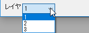

一般的な2Dグラフで右Y軸と左Y軸の両方を表示し、表示タブで各軸を再スケールを設定すると、左と右の2つの垂直アイコンが表示され、左Y軸と右Y軸の参照線を個別に追加して編集できます。
特定の値または範囲を識別するには、軸上に一定の値または計算値で複数の参照線を追加し、対の参照線の間の領域を塗ることができます。
一般的な2Dグラフで右Y軸と左Y軸の両方を表示し、表示タブで各軸を再スケールを設定すると、左と右の2つの垂直アイコンが表示され、左Y軸と右Y軸の参照線を個別に追加して編集できます。 |
参照線の編集前に、複数レイヤグラフのレイヤ切り替えにレイヤリストを使用できます。 
参照線を追加するには、このテキストボックスにスペース区切りで値を入力するか、 このテキストボックスの隣にある、列の選択ボタン をクリックしてワークシートから参照する列を選択します。
をクリックしてワークシートから参照する列を選択します。
いったん参照線の値オプションで参照線を追加すると、このオプションが有効になり、これらの参照線に対するラベルを設定することができます。ワークシートから、スペースで区切られた値のリストを入力するか、ラベルの参照列を指定することができます。（このテキストボックスの横にある列選択ボタン をクリックします）
をクリックします）
Note: このオプションは参照線の値オプションで値を入力するか列を選択することでのみ利用可能です。このオプションに入力した、もしくは選択した列に保存されたラベルは追加した参照線のラベルとして適用されます。（軸の開始/終了を除く）どんなラベルが入力・選択されても、ラベルチェックボックス いずれかのラベルを入力または選択すると、追加参照線のラベルチェックボックスにチェックが入り、ラベルテキストが<自動>に設定されます。
交互塗りつぶし
軸の開始と終了を含む交互塗りつぶし
プロットに統計基準線（平均値など）を追加する場合、このチェックボックスをオンにすると、軸範囲内のデータのみの統計値を計算できます。 このボックスをオフにすると、Originはデータセット全体の統計値を計算します。デフォルトでは、このチェックはオンになっています。
すべての参照線を一覧表示します。デフォルトではこの表の一番上に参照線の軸の開始と軸の終わりが表示されます。ここでは、軸の値セルに値を入力して行を追加することもできます（事項を参照）。
追加された参照線の位置を表示します。名前付き範囲の使用については、このヒントを参照してください。
参照線はデータポイントの背面または正面に表示できます。詳細はデータ描画オプションを参照してください。 |
現在の軸の値に基準線を表示するかどうかを指定します。
現在の参照線からどの参照線まで塗りつぶすか、ドロップダウンリストから選択します。交互塗りつぶしにチェックを付けた場合、この列には対の線が表示されてるのみで、編集はできません。
極座標グラフでは、内側の中心円を塗りつぶすために、参照線の追加オプションがあります。
|
参照線にラベルを表示するかどうか指定します。
ラベルの位置を指定します。水平線と垂直線の両方で、可能な位置は、参照線のスタート、中-上、中間、中-下、最後です。
各参照線のラベルとして表示するものを指定します。
$(v,D99) // v = 目盛ラベルタイプ = 日付の場合、vは"MM/dd/yyyy hh:mm:ss"という形式のユリウス日の値 $(v,T99) $(v,T99) // 目盛ラベルタイプ = 時間の場合、vはユリウス日の"DDD:hh:mm:ss"の形式
デフォルトでは、ラベルlオブジェクトには次のプロパティがあります。
表示ボックスの下に3つのボタンがあります。
| 挿入 | 表示ボックスで選択した基準線の上に新しい参照線を挿入します。 |
|---|---|
| 削除 | 表示ボックスで選択した参照線を削除します。複数選択可能です。(軸の開始と軸の終わり以外の参照線がある場合です)複数選択する場合、Ctrlキーを押しながら、削除したい参照線をクリックして選択します。 |
| 詳細... | 参照線ダイアログを開き、参照線のスタイルをさらにカスタマイズできます。 |
| Note:挿入ボタンと削除ボタンを有効にするには、最初に参照線の値をクリアしてください。 |
このダイアログは、軸ダイアログの参照線タブにある、詳細…ボタンをクリックすると開きます。参照線ダイアログを使用して、線の追加、値の種類（統計など）の設定、各参照線のフォーマットとスタイルを編集できます。
このダイアログを開くと、メインの軸ダイアログは非表示になります。適用ボタンをクリックして、メインの軸ダイアログに戻らずに、このダイアログでの変更のみ適用できます。OKボタンをクリックして設定を保存し（またはキャンセルをクリック）、このダイアログを閉じると、軸ダイアログが再び表示されます。 |
右上のラジオボタンで軸を切り替えて参照線の編集が可能です。
表示タブで左軸と右軸の両方を表示し、各軸を再スケールに設定すると、垂直方向のオプションが左軸と右軸の2つのオプションに分けられて、それぞれの軸で破断を個別に編集できます。
参照線で指定する値の種類を選択します。軸の開始と軸の終わりを除く、カスタム参照線に対してのみ表示されます。
Origin 2022bでは、値の種類が値または式の場合、軸の値ボックスで、名前付き範囲を使用できます。（単独あるいは式の一部として） さらに、参照線を追加する場合、名前付き範囲の定義位置がプロットデータのワークシート（データ行またはラベル行）であっても、名前付き範囲のスコープをプロジェクトにする必要があります。 |
| 値 | 軸上の定数値で参照線を追加します。 |
|---|---|
| 数式 | 曲線の式によって生成された参照線、または式によって計算された値を使用して作成された参照線を追加します。 |
| 統計 | 統計値の参照線を追加します。 |
折れ線グラフ、散布図、線+シンボルグラフ、縦棒/横棒グラフ、ボックスチャートではミニツールバーの統計参照線を追加ボタンをクリックして追加することもできます。
トレリスプロットのように水平/垂直パネルが有効になっている場合は、別レベルのパネルを選択して、統計値の位置に参照線を追加することができます。デフォルトでは、全てが選択され、パネルのすべてのレベルに参照線が追加されます。 |
参照線を追加する位置を指定します。軸の開始と軸の終わりでは利用できず、カスタム参照線に対してのみ表示されます。
| 値の場合 | 定数値または名前付き範囲を入力します。名前付き範囲については、上述の値の種類の項目にあるヒントを参照してください。 | ||
|---|---|---|---|
| 数式の場合 | LabTalk式を入力します。Originでは多くの組み込み関数使って式を入力できます。編集ボックスの横にあるフライアウトボタンをクリックし、リストから関数を選択して編集ボックスに挿入できます。 式中には名前付き範囲を使用することができます。上述の値の種類の項目にあるヒントを参照してください。 Note：文字xとyは、それぞれ現在のx軸とy軸を参照する予約済みの変数です。グラフに、y = x + 1の線を追加したい場合は、軸の値編集ボックスに直接「x+1」と入力します。 | ||
| 統計の場合 | Originの組み込み統計関数の1つを組み込んだ式を入力します。編集ボックスの横にあるフライアウトボタンをクリックし、統計値を選択することで編集ボックスに挿入できます。
パネルの統計は、水平/垂直パネルがある場合にのみ利用可能です。指定された統計値において各パネルのレベルで基準線を表示することができます。 以下の統計構文の議論を参照してください。 Note:
|
| Note:変数xとyを含む数式を別にして、軸の値入力ボックスに1つの値を指定する必要があります。データセットの場合、最初の要素のみが考慮されます。たとえば、軸の値入力ボックスに「sin(data(1,32))」と入力すると、x/y = sin(1)にのみ参照線が表示されます。 |
参照線が表示されるパネルを指定します。トレリスプロットでのみ使用できます。パネルインデックスを区切るためにコンマを使います。
表示のチェックボックスは、表示表にある線チェックボックスと一致しています。これを使って、参照線を表示したり非表示にしたりできます。
自動フォーマットのチェックを外すと、参照線の色、スタイル、および太さを編集できます。
参照線の設定をしたら、その線種の設定をデフォルトとして設定できます。次回以降参照線を追加すると、保存した線種が適用されます。
2つの方法があります。
対になった参照線間の塗りつぶしを編集します。
ドロップダウンリストから塗りつぶし先の参照線を選択します。これは、表示テーブルの塗りつぶしオプションと一致します。交互塗りつぶしボックスにチェックを付けた場合、このドロップダウンリストはグレーアウトして使用できません。

| Note: ダイアログのフォーマットのコピーとフォーマットの貼り付けで、参照線のスタイルを簡単にコピーすることができます。左パネルの参照線で右クリックして、フォーマットのコピーを選択し、貼り付けたい参照線の上で右クリックしてフォーマットの貼り付けを選択します。さらに、コンテキストメニューから、複製を選択して、新規の参照線を同じスタイルで作成できます。 |
参照線のラベルをカスタマイズします。
| 表示 | 参照線にラベルを表示するかどうか指定します。 |
|---|---|
| テキスト | 参照線のラベルとして表示するものを指定します。前述のセクションで詳細を説明しています。 |
| ラベル形式 | 参照線にどのよにラベルを表示するか指定します。統計照線の場合にのみ表示されます。
|
| プロットの識別 | プロットを識別するためにラベルに表示する名前を指定します。 |
| 位置 | ラベルの位置を指定します。 |
レイヤドロップダウンリストを使用してレイヤを切り替えることができます。
追加、挿入、削除ボタンをクリックして、参照線を追加、挿入、削除できます。